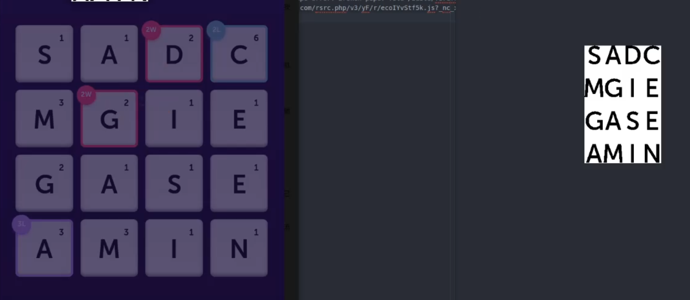
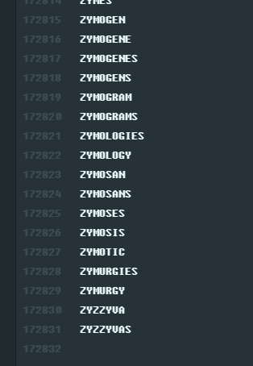
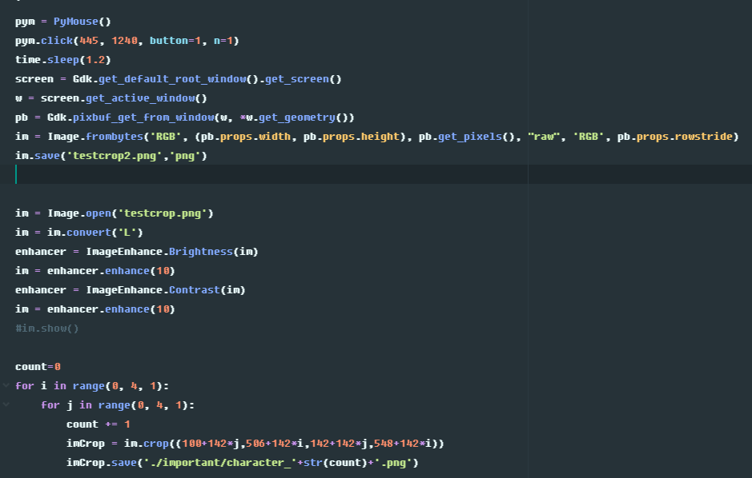

Demo video
Word Blitz is a game from Facebook Messenger. Everyone could play it on your phone or computer as long as you have a Facebook account. The game is simple. Given a 4x4 list of characters, connect characters that can make a word. Find as many word combinations as possible in 2 minutes.
In order to make the bot play, we have first input the character list. So the program could start to find conbinations.
At first, I have to manually input that 16 characters. But that is really tiring. So I decide to make the program collect the input automaticlly.
I wrote the code in Python3. That way I can use OCR modules easily.

I used recursion in the code. Create all the possible combinations of characters. Then check if the conbination is in the dictionary.
This is a bad way to find the answer. But is fast enough to check all the possible answer in 2 minutes.

This is the end of the dictionaty, there are 170000+ possible words.
This module "PyMouse" in Python can move your mouse and simulate click actions.
Sadly, we are simulating mouse actions to send input to the browser. This is way slower then just sending info by packets.
But there's no such api exists. So I had to do this.

And that's how the bot was made!